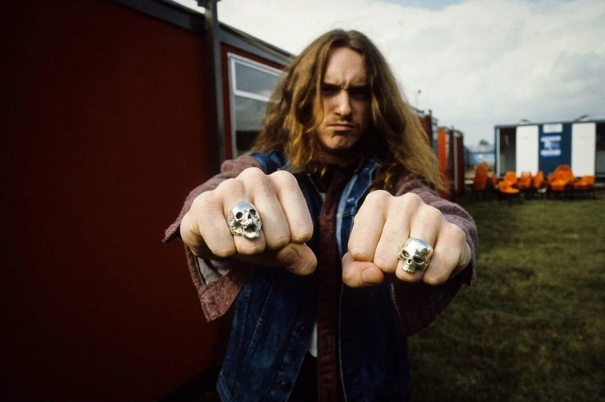
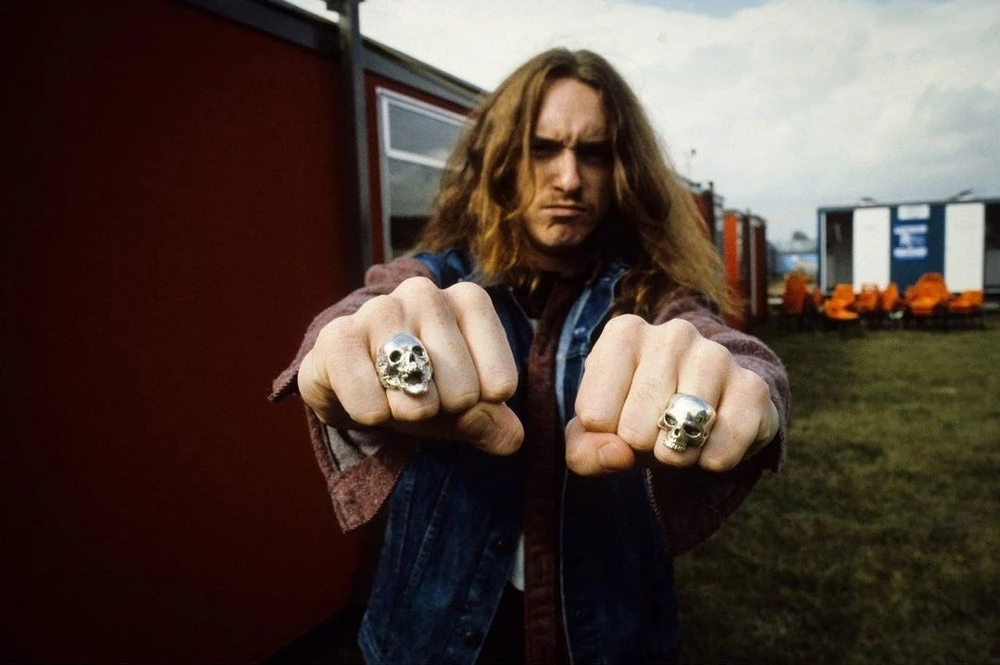
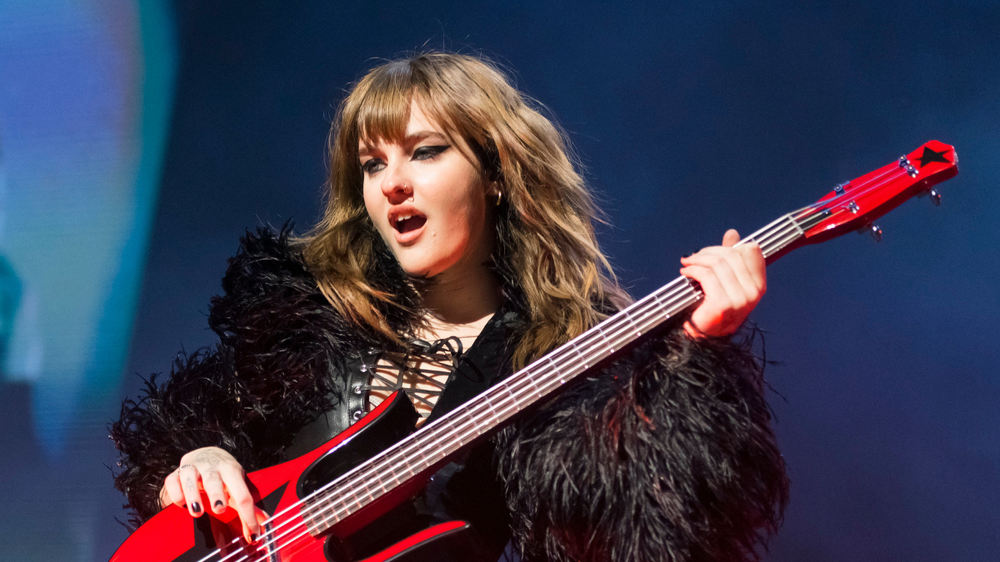
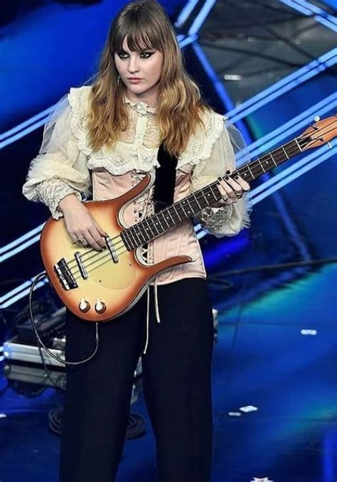
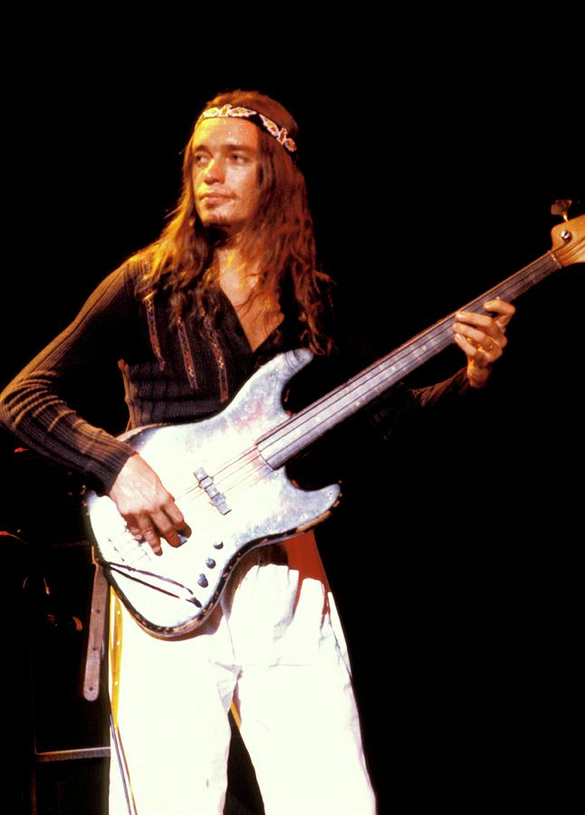
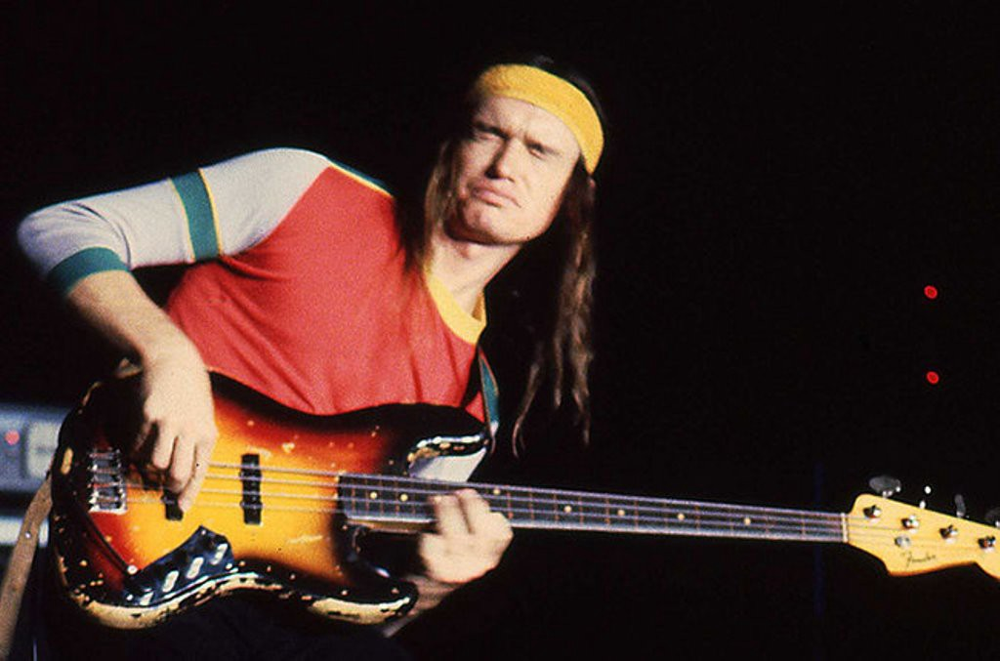
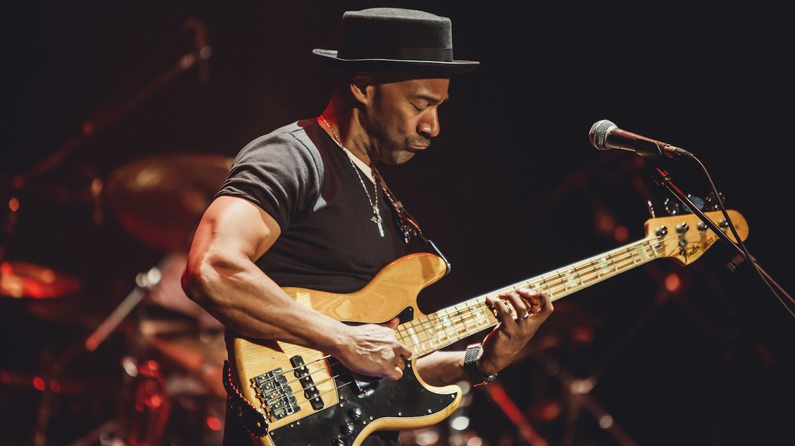
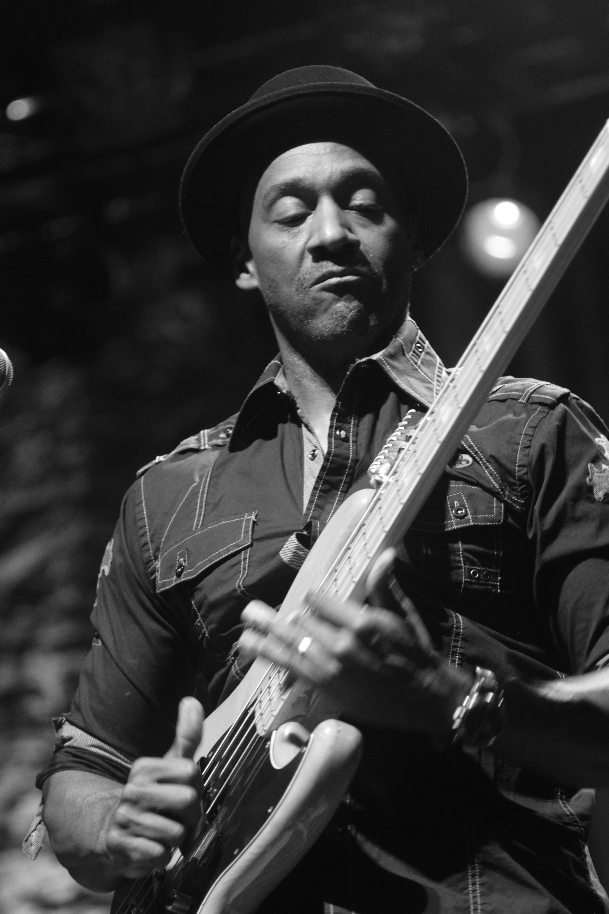
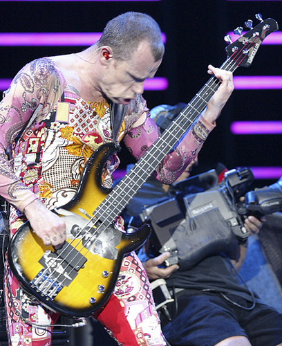
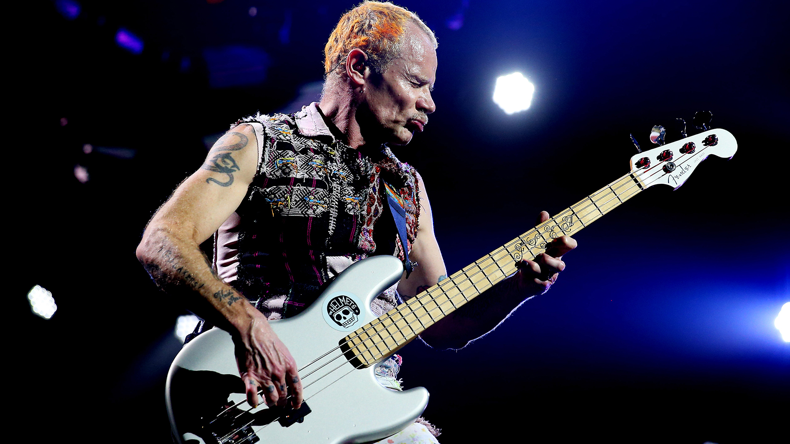

Cliff Burton
Cliff a fost basistul emblematic al trupei Metallica, cunoscut pentru abilitățile sale excepționale și contribuțiile inovatoare în muzică. Prin tehnica sa complexă, utilizarea efectelor de distorsionare și influențele sale variate, Burton a revoluționat modul în care basul era perceput în metal. Sunetul său distinct și melodiile elaborate au adăugat o profunzime muzicală trupei Metallica, influențând generații de basişti și stabilind noi standarde în industrie.
 

Victoria de Angelis
Victoria este basista trupei Måneskin, este o forță creativă și un simbol al revitalizării rockului modern. Stilul său de compoziție este caracterizat de o combinație între influențe clasice de rock și tehnici contemporane, ceea ce conferă muzicii sale un sunet unic, atât nostalgic, cât și inovator. Victoria, alături de trupa din care face parte, a reușit să readucă rockul în prim-planul scenei muzicale internaționale, câștigând popularitate globală și atrăgând o nouă generație de fani. Cu un stil îndrăzneț și o prezență scenică electrizantă, Victoria a devenit un model pentru tinerii muzicieni, demonstrând că autenticitatea și pasiunea pot redefini genurile muzicale.
 Jaco Pastorius
Jaco Pastorius a revoluționat jazzul și a redefinit complet rolul chitării bas în muzică. El este considerat unul dintre cei mai influenți basiști din toate timpurile, datorită tehnicii sale inovatoare și a stilului său unic. Ca membru al trupei Weather Report, Jaco a contribuit la popularizarea jazzului fusion, combinând elemente de jazz, funk și rock. Piese precum „Birdland” și „Teen Town” sunt exemple emblematice ale geniului său. De asemenea, el este faimos pentru utilizarea unei chitări bas Fender Jazz Bass din 1962, pe care a transformat-o într-un instrument fretless prin îndepărtarea tastelor. Această chitară, cunoscută sub numele de „Bass of Doom”, a devenit un simbol al stilului său inovator.
 Marcus Miller
Marcus Miller este un muzician și compozitor excepțional, recunoscut pentru stilul său distinctiv ce îmbină tehnica slap bass percutantă cu armonii complexe și linii melodice sofisticate, creând un sunet unic și inovator. El și-a început cariera muzicală ca basist de studio, colaborând cu artiști renumiți precum Luther Vandross și Aretha Franklin. Pe lângă activitatea de colaborator, Marcus a lansat o serie de albume solo premiate, care i-au demonstrat măiestria ca interpret și compozitor.
 Flea
Flea, basistul trupei Red Hot Chili Peppers, este renumit pentru stilul său energetic și inconfundabil, care îmbină tehnici de funk, punk și rock, adăugând o dimensiune vibrantă și explozivă muzicii formației. Pe lângă activitatea cu trupa, el este un muzician versatil, colaborând cu numeroși artiști și explorând diverse genuri. Printre colaborările sale notabile se numără participarea la proiecte cu Thom Yorke în supergrupul Atoms for Peace, unde a explorat genuri electronice și experimentale. De asemenea, a lucrat cu Jane's Addiction, contribuind la sunetul lor alternativ, și cu The Mars Volta, unde a adus influențe de rock progresiv și psihedelic. Flea a colaborat și cu Alanis Morissette pe albumul ei de succes Jagged Little Pill, aducând un aport distinctiv în genul pop-rock.
 